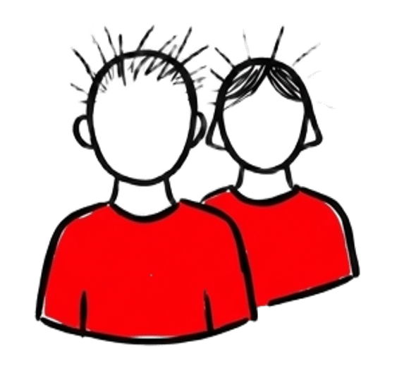

Apresentação da pesquisa
Esta plataforma está intrinsecamente vinculada ao projeto de pesquisa de doutorado Movimento operário na resistência à Ditadura Civil-Militar: lutas por educação e iniciativas educacionais da Oposição Sindical Metalúrgica de São Paulo, orientado pela Profa. Dra. Carmen Sylvia Vidigal Moraes (2021–). Ao mapear relações semânticas entre indivíduos, sindicatos e aparatos de repressão estatal em um grafo de conhecimento abrangente, o Atlas oferece subsídios para a investigação da evolução histórica de categorias jurídicas relacionadas à violência de Estado e às violações de direitos humanos. Por meio da interoperabilidade semântica e da estruturação de dados, a iniciativa contribui para a memória, a verdade e a justiça de transição relacionadas às vidas atingidas pelos regimes autoritários latino-americanos.
A pesquisa está em andamento. Seu núcleo histórico principal é a Oposição Sindical Metalúrgica de São Paulo (OSM-SP), com trabalhadores e trabalhadoras, educadores, assessores, comissões de fábrica e organizações envolvidas em processos de mobilização, resistência e formação. A pesquisa incorpora também outros agentes, movimentos sociais, instituições e acontecimentos relacionados. A participação constitutiva em projetos do movimento não deve ser confundida automaticamente com filiação sindical formal.
Pesquisa e desenvolvimento
Millena Miranda Franco desenvolve pesquisa em Educação e estuda Direito na Universidade de São Paulo (USP). É mestra em Educação pela USP, com período de mobilidade Erasmus+ na Universität Potsdam, Alemanha. Desenvolve projeto financiado pela FAPESP, Organização e disponibilização pública de acervo documental envolvendo violência de estado (processo 2025/11544-9), no âmbito da FGV DIREITO SP, sob supervisão da Profa. Dra. Maíra Rocha Machado.
A versão Cloudflare preserva a arquitetura editorial e visual da plataforma R. As matrizes completas são carregadas localmente pela pesquisadora até que a publicação do acervo seja autorizada e protegida.
Grafo de conhecimento
Explore os vínculos entre pessoas, instituições, movimentos, acontecimentos, documentos e conceitos jurídicos. Use os filtros para isolar o recorte; clique em um nó para expandir a rede e consultar as biografias e fontes. Os tipos de vínculo ficam nas informações das conexões, não sobre as linhas.
Leitura da rede: pessoas, movimentos e instituições compõem a rede social e organizacional. Acontecimentos, violências, categorias jurídicas e fontes são apresentados nas fichas e no compêndio, sem servir de pontes entre pessoas. O compartilhamento de uma organização não comprova relação pessoal direta.
Lugares de memória e resistência
Distribuição territorial dos lugares de memória, resistência e repressão registrados na matriz de pesquisa, com endereços complementares documentados.
Conceitos jurídicos
Glossário de categorias jurídicas, violações de direitos e crimes mobilizados no conjunto documental histórico.
Construtor de consultas semânticas
O construtor semântico do projeto original utiliza uma arquitetura de dados interligados, fundamentada no Resource Description Framework (RDF), com triplas serializadas em Turtle (.ttl) e consultas SPARQL. Esta migração preserva a lógica sujeito–predicado–objeto, os controles e o botão animado; nesta etapa, as consultas são executadas sobre as relações carregadas no navegador. O suporte à sintaxe SPARQL é parcial e não substitui o Apache Jena Fuseki.

Resultados da consulta
Repositório de dados
Consulte exclusivamente as tabelas relacionais entre entidades. As referências documentais identificadas são apresentadas; os excertos inéditos permanecem reservados à matriz de pesquisa.
Carregar a matriz completa, com evidências, neste navegador
Selecione os CSVs da pasta app/data do seu computador. Nenhum arquivo será transmitido ao Cloudflare.
Acervos de Movimentos Sociais (Cosmov)
Pesquisa bibliográfica pela API OpenAlex, complementada por referências selecionadas pela pesquisadora. Explore artigos acadêmicos, teses e publicações relacionadas aos movimentos sociais catalogados no Atlas.
Cronologia da resistência
Acontecimentos, trajetórias e iniciativas educacionais em perspectiva temporal. Piloto baseado exclusivamente na matriz pública.
Carregando matriz pública…
As barras indicam registros iniciados em cada ano, não intensidade histórica. Selecione um ano para examinar os registros que se sobrepõem a ele. Um início sem término não representa duração comprovada.
Registros no período
Registros sem início temporal seguro
Laboratório de História Oral
Piloto de curadoria de relações inspirado no Linked Jazz. Leia um excerto, identifique as entidades e formule uma relação verificável.
Área experimental local. Não há autenticação, submissão ao servidor ou publicação automática. O texto e as propostas ficam apenas na memória desta aba até a exportação; recarregar a página os apaga. Não utilize dados sensíveis em computadores compartilhados.
Documento e excerto
Fila de revisão
A colaboração neste piloto ocorre por troca de arquivos JSON. Nenhuma proposta é inserida automaticamente no grafo ou no repositório de dados. Uma relação documentada exige conferência humana.